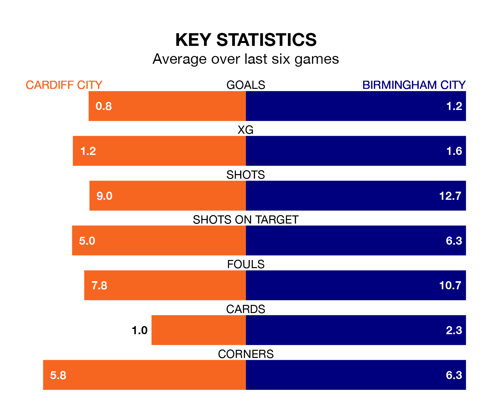

Birmingham City travel to Cardiff City on late Wednesday in the Championship.
The visitors come into the game on the back of a defeat in their last match, having lost to Coventry City 2-0 away.
The Bluebirds, meanwhile, won their last match, 1-0 against Millwall, with their goal scored by Dimitrios Goutas.
In the last 10 years, Cardiff and Birmingham have played each other on 17 occasions. Cardiff won eight of them, Birmingham two, and they drew seven times.
On average, the Bluebirds scored 1.6 goals and the Blues 0.9 in those matches.
Their last meeting was on August 29, when Cardiff won 3-1 away.
Cardiff are in mixed form in the Championship, with two wins and a draw from their last six games.
With a win and two draws over that period, Birmingham's form is slightly worse – they have taken five points from 18, compared to Cardiff City's seven.
With 23 goals in 20 games so far this season, Birmingham City are scoring at below the league average rate with 1.1 goals per game. And they are conceding at an average rate, letting in 29 goals at a rate of 1.4 per game.
The Bluebirds, meanwhile, are average scorers, with 1.4 goals per game. They have conceded 1.1 goals per game.
In Jak Alnwick, the home side can rely on one of the league's safest pair of hands. He has kept six clean sheets in his 15 appearances this season in the Championship.
In the Blues' net, John Ruddy has four clean sheets in 20 games. He has conceded a goal every 72 minutes, 40% more often than the 104 minutes between goals for Alnwick.
Cardiff are seventh in the table after 20 games, of which they have won nine and drawn three, earning 30 points.
The visitors are 10 places behind Cardiff in 17th, with six wins and five draws putting them on 23 points.
